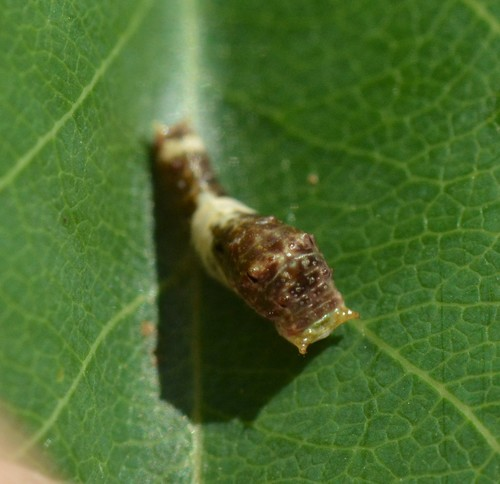
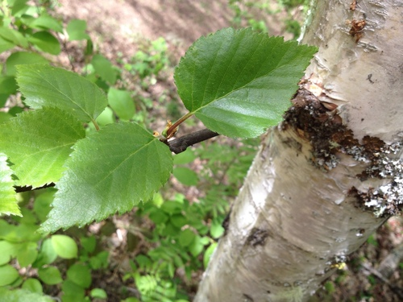
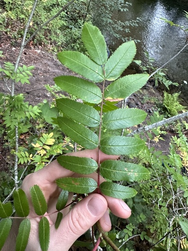

Canadian Tiger Swallowtail
Papilio canadensis butterfly / moth

Large yellow-and-black swallowtail. Caterpillars feed on aspen, birch, willow, and chokecherry.
36 documented plant relationships.
sips nectar at
 Boreal YarrowAchillea borealis
Boreal YarrowAchillea borealis Douglas Goldman, some rights reserved (CC BY-SA), uploaded by Douglas Goldman") ChokecherryPrunus virginiana
ChokecherryPrunus virginiana Nick Block, some rights reserved (CC BY), uploaded by Nick Block") Eastern Red ColumbineAquilegia canadensisGlacier LilyErythronium grandiflorumHeart-leaved ArnicaArnica cordifoliaNarrow-leaved HawkweedHieracium umbellatum
Eastern Red ColumbineAquilegia canadensisGlacier LilyErythronium grandiflorumHeart-leaved ArnicaArnica cordifoliaNarrow-leaved HawkweedHieracium umbellatum Douglas Goldman, some rights reserved (CC BY-SA), uploaded by Douglas Goldman") Northern BedstrawGalium boreale
Northern BedstrawGalium boreale Carrie Seltzer, some rights reserved (CC BY), uploaded by Carrie Seltzer") Northern HedysarumHedysarum boreale
Northern HedysarumHedysarum boreale Tom Norton, some rights reserved (CC BY), uploaded by Tom Norton") Pin CherryPrunus pensylvanicaPink CorydalisCapnoides sempervirensPrairie ThistleCirsium flodmanii
Pin CherryPrunus pensylvanicaPink CorydalisCapnoides sempervirensPrairie ThistleCirsium flodmanii Alan Rockefeller, some rights reserved (CC BY), uploaded by Alan Rockefeller") Red ColumbineAquilegia formosa
Red ColumbineAquilegia formosa Douglas Goldman, some rights reserved (CC BY-SA), uploaded by Douglas Goldman") Self-healPrunella vulgaris
Self-healPrunella vulgaris Douglas Goldman, some rights reserved (CC BY-SA), uploaded by Douglas Goldman") Showy MilkweedAsclepias speciosa
Showy MilkweedAsclepias speciosa Ryan Hodnett, some rights reserved (CC BY-SA)") SilverberryElaeagnus commutata
SilverberryElaeagnus commutata aarongunnar, some rights reserved (CC BY), uploaded by aarongunnar") Smooth AsterSymphyotrichum laeveSmooth Fleabane (Streamside Fleabane)Erigeron glabellus
Smooth AsterSymphyotrichum laeveSmooth Fleabane (Streamside Fleabane)Erigeron glabellus gwt2102, some rights reserved (CC BY)") Spreading DogbaneApocynum androsaemifolium
Spreading DogbaneApocynum androsaemifolium Sticky Purple GeraniumGeranium viscosissimumWestern Wood LilyLilium philadelphicum
Sticky Purple GeraniumGeranium viscosissimumWestern Wood LilyLilium philadelphicum marlin harms, some rights reserved (CC BY)") White CamasAnticlea elegans
White CamasAnticlea elegans tzeducation, some rights reserved (CC BY), uploaded by tzeducation") Wild BergamotMonarda fistulosa
Wild BergamotMonarda fistulosa Pohled 111, some rights reserved (CC BY-SA)") Wild ChivesAllium schoenoprasum
Wild ChivesAllium schoenoprasum Ole Husby, some rights reserved (CC BY-SA)") Wild RaspberryRubus idaeus
Wild RaspberryRubus idaeus Andrea Romero, some rights reserved (CC BY), uploaded by Andrea Romero") Wild VetchVicia americana
Wild VetchVicia americana aarongunnar, some rights reserved (CC BY), uploaded by aarongunnar") Yellow-flowered LocoweedOxytropis campestris
Yellow-flowered LocoweedOxytropis campestrislays eggs on
Bebb's WillowSalix bebbianaChokecherryPrunus virginiana Dustin Snider, some rights reserved (CC BY), uploaded by Dustin Snider") Dwarf BirchBetula glandulosaPin CherryPrunus pensylvanica
Dwarf BirchBetula glandulosaPin CherryPrunus pensylvanica bobkennedy, some rights reserved (CC BY-SA), uploaded by bobkennedy") Pussy WillowSalix discolor
Pussy WillowSalix discolor Harvey Barrison, some rights reserved (CC BY-SA)") Sandbar WillowSalix interior
Sandbar WillowSalix interior Douglas Goldman, some rights reserved (CC BY-SA), uploaded by Douglas Goldman") Trembling AspenPopulus tremuloides
Trembling AspenPopulus tremuloides Jim Morefield, some rights reserved (CC BY)") Water BirchBetula occidentalis
Water BirchBetula occidentalis
ChokecherryPrunus virginianaDwarf BirchBetula glandulosa
Paper BirchBetula papyriferaPin CherryPrunus pensylvanicaPussy WillowSalix discolorSandbar WillowSalix interiorTrembling AspenPopulus tremuloidesWater BirchBetula occidentalis
Western Mountain AshSorbus scopulina